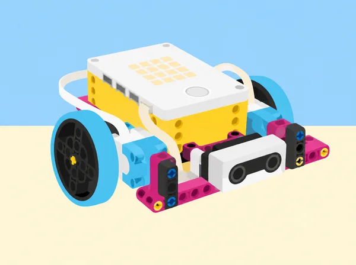
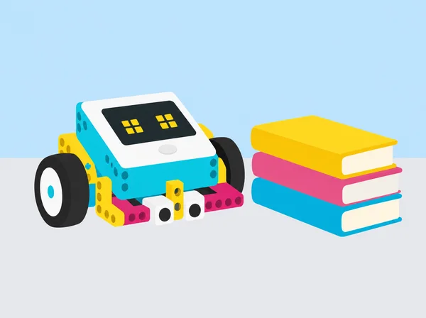

Robots que ens ajuden
🏷️ Computació física i professions
🌱 Situació, repte i intenció
les preguntes, els contextos, les proves i les evidències són propis. Cap prototip es presenta com un dispositiu de servei real ni com una solució certificada.
🎯 Aprenentatges i vocabulari
- Explicar com interactuen estructura, actuadors, sensors i programa en un sistema robòtic.
- Provar una entrada i una eixida i descriure què canvia quan es modifica el codi.
- Construir i iterar un prototip amb rols cooperatius i proves observables.
- Relacionar la computació física amb tasques professionals sense atribuir autonomia o capacitats no provades.
🧰 Materials i preparació
Un set SPIKE Prime 45678 i un dispositiu amb l’app SPIKE per parella; quadern o full de registre, targetes, paper i retoladors; connexió i hubs carregats abans de la classe. Comproveu que les lliçons d’inici i els programes seleccionats estan disponibles en la versió de l’app del centre. Quan un sensor o una funció de so no estiga disponible, representeu l’entrada amb una targeta o un comandament manual i etiqueteu-la com a simulació, sense atribuir la detecció al maquinari.
Prepareu les fonts sobre professions i una alternativa impresa per a qui no tinga accés a internet. No cal cap expansió 45681 ni components externs.
📅 Seqüència didàctica
Introducció a la robòtica (45 min)
Fase 1 · Activem i prediem
Feu una pluja d’idees sobre necessitats que podria ajudar a resoldre la tecnologia. Distingiu problema, persona usuària i funció tècnica; anoteu una hipòtesi de què podria fer un robot per respondre a una necessitat.
Fase 2 · Explorem i construïm
En parelles, exploreu el set SPIKE Prime i identifiqueu hub, motors, sensors i elements estructurals. No forceu ni desmunteu connexions.
Fase 3 · Expliquem i registrem
Acordeu tres normes concretes per compartir el kit, alternar torns de construcció i programació, i deixar els materials preparats per al grup següent. Registreu una primera idea de projecte final.
Fase 4 · Apliquem i millorem
Assigneu rols i decidiu com rotaran. Reviseu si les normes permeten que cada persona participe i si es pot completar el lliurament a temps; canvieu una norma si deixa una tasca sense responsable.
Fase 5 · Comprovem i reflexionem
Què és un robot? (45 min)
Fase 1 · Activem i prediem
Definiu «robot» amb tres paraules i predigueu quins elements hauria de tindre un sistema per encaixar en la definició.
Fase 2 · Explorem i construïm
Contrasteu exemples quotidians i industrials: què detecten, quin programa segueixen i quina tasca repetitiva o difícil fan? Completeu una taula d’entrada, procés i resposta, i marqueu què és maquinari i què és programari.
Fase 3 · Expliquem i registrem
Amb el hub SPIKE sense accessoris, obriu la lliçó d’inici de l’app i comproveu què pot fer la matriu quan rep un programa. Anoteu l’entrada, el codi executat i la resposta observada.
Fase 4 · Apliquem i millorem
Afegiu casos que compliquen la definició, com una porta automàtica o un electrodomèstic programable. Reviseu quins criteris expliquen millor les proves i quins casos necessiten una matisació.
Fase 5 · Comprovem i reflexionem
So i llum (45 min)
Fase 1 · Activem i prediem
Representeu amb el cos o amb targetes tons baixos, mitjans i alts. Ordeneu-los de manera ascendent i descendent i predigueu com canviaria el missatge si modifiqueu un paràmetre.
Fase 2 · Explorem i construïm
Relacioneu funció i paràmetre: reutilitzeu una instrucció i canvieu un valor. Cada parella crea un missatge d’acollida per a una biblioteca o un espai tranquil, combinant icones de la matriu del hub i una seqüència de sons.
Fase 3 · Expliquem i registrem
Planifiqueu amb pseudocodi l’inici, l’ordre de les icones i els sons, la durada, el volum i la repetició. Anoteu què significa cada senyal perquè una altra parella puga interpretar-lo.
Fase 4 · Apliquem i millorem
Programeu i proveu el missatge. Feu una versió silenciosa o només visual i reviseu-la després que una altra parella explique què ha entés abans de rebre la vostra explicació.
Fase 5 · Comprovem i reflexionem
Motors i sensors (45–60 min)
Fase 1 · Activem i prediem
Abans de connectar res, predigueu la funció del motor mitjà i gran, dels sensors de distància, color i força, i del giroscopi integrat al hub.
Fase 2 · Explorem i construïm
Completeu una graella amb component, predicció, prova, observació i exemple quotidià. Seguiu la pràctica guiada de l’app; en un motor, proveu una arrencada progressiva durant deu rotacions i canvieu-ne el sentit.
Fase 3 · Expliquem i registrem
Observeu què varia quan canvieu distància, color, pressió o inclinació. No confongueu el giroscopi integrat del hub amb un sensor extern. Registreu port i valors de cada prova.
Fase 4 · Apliquem i millorem
Cada equip programa una entrada i una resposta, i després combina un motor i un sensor en una idea pròpia. Reviseu el programa perquè un altre equip puga reproduir la prova amb els mateixos ports i condicions.
Fase 5 · Comprovem i reflexionem
Fes que es moga (90 min)
Fase 1 · Activem i prediem
Recupereu les definicions de robot i prototip. Acordeu criteris observables per decidir si el model es mou de manera controlada i quines proves donaran evidència.
Fase 2 · Explorem i construïm
Construïu, amb les instruccions disponibles a l’app, un model saltador senzill del set SPIKE Prime. Reviseu connexions, port, mecanisme i espai de moviment abans d’executar-lo.
Fase 3 · Expliquem i registrem
Abans de cada canvi, escriviu què espereu que passe. Altereu una sola variable —velocitat, durada, potència o nombre de rotacions— i anoteu el resultat i la decisió següent en una taula d’iteració.
Fase 4 · Apliquem i millorem
Depureu per parts: connexió, port, mecanisme, bloc i valor. Compareu dos intents en les mateixes condicions i expliqueu com el codi canvia el comportament del maquinari.
Fase 5 · Comprovem i reflexionem
La docent selecciona fonts públiques accessibles sobre ocupacions i itineraris a la Comunitat Valenciana, prepara una fitxa d’investigació i organitza equips de quatre amb rols rotatius (cercador de fonts, verificador, cartògraf visual i portaveu). Ningú no ha de revelar interessos personals. El projecte amplia la lliçó oficial de 240 minuts en quatre sessions navegables de 60 minuts.
Projecte professional · Sessió 1 · Obrim el mapa d’ocupacions (60 min)
Fase 1 · Activem i prediem
Connecteu la robòtica amb dos àmbits: serveis humans i educació/formació. En pluja d’idees, proposeu qui ensenya, acompanya, facilita l’accés a un servei o prepara recursos. Predigueu quines tasques visibles i invisibles fan possible un servei.
Fase 2 · Explorem i construïm
Amplieu la llista més enllà de les ocupacions conegudes. Cada equip tria dues professions i localitza una font pública adequada per investigar-les.
Fase 3 · Expliquem i registrem
Completeu una fitxa amb tasques reals, persones amb qui col·laboren, habilitats, entorn, estudis o acreditacions per comprovar i una font datada. Distingiu el fet trobat de la suposició i no traslladeu dades laborals d’un altre país com si descrigueren el mercat local.
Fase 4 · Apliquem i millorem
Reviseu la fitxa amb un altre equip: cada tasca s’entén i cada afirmació té font o queda marcada com a hipòtesi? Afegiu un rol que falte o una pregunta de verificació.
Fase 5 · Comprovem i reflexionem
Projecte professional · Sessió 2 · Del treball a un model (60 min)
Fase 1 · Activem i prediem
Recupereu les fitxes de professions i predigueu com es relacionen amb els robots, motors i sensors estudiats en les lliçons anteriors.
Fase 2 · Explorem i construïm
Construïu una representació d’un sector o de la col·laboració entre rols amb peces SPIKE, paper o cartó. El model no caricaturitza persones ni afirma que un robot puga substituir una tasca de cura.
Fase 3 · Expliquem i registrem
Relacioneu cada part del model amb una tasca professional, una habilitat i una persona o servei que hi col·labora. Prepareu una presentació d’un minut amb una idea clau i una pregunta oberta.
Fase 4 · Apliquem i millorem
Proveu la presentació amb un altre equip. Reviseu una part del model si no comunica la relació entre les professions o si es confon la representació amb un servei real.
Fase 5 · Comprovem i reflexionem
Projecte professional · Sessió 3 · Contrastem i connectem (60 min)
Fase 1 · Activem i prediem
Abans de les presentacions, anoteu quines habilitats espereu que siguen compartides i quines penseu que seran específiques de cada ocupació.
Fase 2 · Explorem i construïm
Cada grup presenta el seu model. La classe pregunta qui utilitza el servei i quines ocupacions hi participen abans, durant i després.
Fase 3 · Expliquem i registrem
Completeu un diagrama de Venn «compartit / serveis humans / educació i formació» i una xarxa de col·laboracions entre professions. Afegiu una ocupació desconeguda que hàgeu trobat i una font que la confirme.
Fase 4 · Apliquem i millorem
Reviseu la xarxa si les fonts o les preguntes del públic mostren una connexió que faltava. Un altre grup aporta una pregunta i una fortalesa concreta del model.
Fase 5 · Comprovem i reflexionem
Projecte professional · Sessió 4 · Necessitat, suport i reflexió (60 min)
Fase 1 · Activem i prediem
Trieu una necessitat fictícia d’un espai educatiu i definiu una persona usuària sense utilitzar casos identificables. Predigueu quina ajuda seria útil i quina intervenció humana continuaria sent necessària.
Fase 2 · Explorem i construïm
Dissenyeu una ajuda segura: prototip senzill amb peces o maqueta de paper. Indiqueu entrada, resposta, persona responsable, límit i alternativa manual.
Fase 3 · Expliquem i registrem
Expliqueu quin personal qualificat participa en el servei i quines decisions no delegaríeu al prototip. Prepareu una prova de taula amb criteris observables.
Fase 4 · Apliquem i millorem
Feu una prova amb targetes o objectes, reviseu un criteri i anoteu una limitació. No presenteu el prototip com a substitut de l’acompanyament professional.
Fase 5 · Comprovem i reflexionem

🧪 Evidències i avaluació
Recolliu normes i rols de l’equip, definició argumentada de robot, mapa maquinari–programari, pseudocodi, programa de llum i so, graella de prediccions i observacions dels sensors, registre d’iteracions i presentació final. Valoreu si distingeixen entrada, procés i resposta; si relacionen el codi amb el moviment observat; si canvien una variable cada vegada; si justifiquen la definició amb proves; i si escolten i incorporen comentaris.
L’autoavaluació de cada sessió revisa col·laboració, gestió del temps i inventari compartit, amb una escala clara d’1 a 3 i un objectiu concret per a la següent classe.
♿ Participació, accessibilitat i seguretat
Oferiu rols rotatius de programació, construcció, observació, portaveu i inventari; instruccions escrites i visuals; i opcions de resposta oral, gràfica o escrita. La tasca de so té alternativa silenciosa i cap alumne ha de compartir públicament interessos professionals personals. En les proves de sensors, no es recopilen dades personals ni es detecten persones: s’utilitzen peces, targetes i objectes. Els prototips no substitueixen el criteri ni la cura de professionals.
🔗 Referents i adaptació
Aquesta seqüència correspon a les sis lliçons de la unitat 1 What Is a Robot? del curs LEGO Education Foundations of Physical Computing: Introduction to Robotics, What is a Robot?, Sound and Light, Motors and Sensors, Make It Move i Connecting to Careers: Human Services and Education & Training. Conserva els objectius, la progressió pràctica, la classificació de components, la definició amb evidències, la programació de llum/so, les iteracions i la investigació professional;
adapta el context, les preguntes, els registres i el producte final. Les instruccions de muntatge LEGO continuen en l’app del fabricant; aquesta fitxa no les copia ni les representa com a creació pròpia.